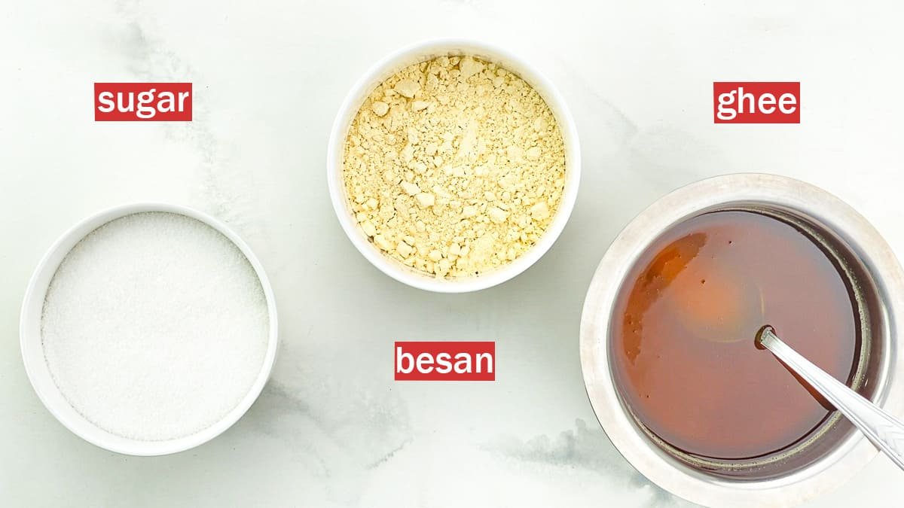
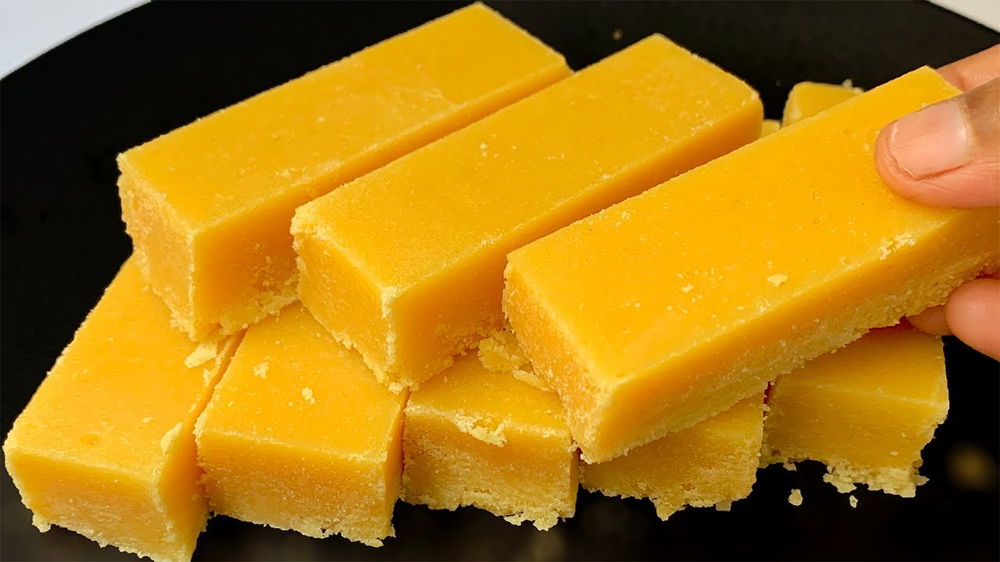

Mysore Pak, a delectable South Indian sweet, has a rich history and a taste that delights the palate. Originating from the city of Mysuru in Karnataka, India, this sweet is deeply embedded in the culinary heritage of the region. Legend has it that Mysore Pak was created in the royal kitchen of the Mysuru Palace during the reign of Krishnaraja Wadiyar IV in the 20th century. The royal cook, Kakasura Madappa, is credited with the invention of Mysore Pak. According to popular lore, he accidentally stumbled upon the recipe while trying to prepare a different sweet. The result was a delightful confection that pleased the king, leading to the birth of Mysore Pak. Over time, the sweet gained immense popularity and became synonymous with the city of Mysuru. Mysore Pak is made from a simple yet harmonious combination of ingredients: gram flour (besan), ghee (clarified butter), and sugar. The preparation involves carefully roasting gram flour in ghee until it attains a golden hue, followed by the addition of sugar syrup. The mixture is then cooked to perfection, resulting in a fudgy, melt-in-the-mouth texture. The distinct taste of Mysore Pak lies in the balance of sweetness and the rich, nutty flavor of ghee. This iconic sweet is often associated with festive occasions, celebrations, and traditional ceremonies in South India. Its popularity has transcended regional boundaries, making it a beloved treat across the country. The unique preparation method and the historical connection to the royal kitchens of Mysuru add to the allure of Mysore Pak, making it not just a sweet but a cultural symbol that continues to enchant generations with its timeless taste and heritage.
Mysore Pak Recipe

Ingredients Required
1 cup Gram flour (besan)
1-1/4 cups Ghee
1-1/4 cups Sugar
1 cup Water
Instructions

To begin making Homemade Mysore Pak Recipe, prep all the ingredients and keep them handy. Every step comes one after another and hence you need to keep them all ready and handy.
Also grease a small rectangular or a square pan which can give you a decent height to be shaped into a Mysore Pak. Approximately 10 x 6 inches (outer edge) is the size of the pan (inner edge is 9 x 4 inches)
In a heavy bottomed preheated over medium heat, roast the besan/ gram flour for about 2 to 3 minutes until you get a roasted aroma from the gram flour. This will help the raw smell go away from the besan.
Ensure you take care not to allow it to brown or burn. Once roasted remove it into a bowl and keep aside.
In a heavy bottomed non stick pan; add the sugar and water and bring the water to a boil ensuring the sugar dissolves completely in the water. Keep stirring so that the sugar dissolves well.
Continue to allow the sugar water to boil - after about 4 minutes you will notice that the sugar water is getting bubbly and sticky as well. It will form a foamy texture.
At this stage the consistency of the sugar water will be of a sticky and one string consistency.
At this stage, turn the heat to low and add the gram flour into the sugar syrup and keep stirring it continuously so it combines well without any lumps and gets a smooth consistency. The heat needs to be on low from now on till the end of the making of Mysore Pak.
Once the gram flour is combined well, add ghee little at a time and repeat the addition of ghee after 3-4 minutes of stirring. The 1-1/2 cups of ghee needs to be added in small batches with a space of 3 minutes between each turn.
As you keep adding ghee and waiting for the next batch of ghee to be added, ensure that you keep stirring the Mysore Pak.
Once the entire mass comes together and looks smooth, add the last portion of ghee and continue to stir till the whole masses rises up like froth and you will notice that the Mysore pak gets a very porous texture where you see the eye holes while stirring.
Once it comes to this consistency, remove from the heat and pour the mysore pak mixture into the greased tray. Bang the tray lightly to allow the mass to spread all over and looks evenly spread.
Dip a flat spatula with ghee and spread over the Mysore Pak to level it down and make it smooth from the top.
Continue this light press and spread until the top of the Mysore Pak looks smooth.
At this stage, using a knife, cut the Mysore Pak into rectangle or diamond shapes and allow the Mysore Pak to cool down completely.
Once completely cooled, gently lift the Mysore Pak pieces out of the pan and serve.
Store the Mysore Pak in airtight container for 1 week or in the refrigerator for 2 weeks.
 South Indian Recipes
South Indian Recipes Mysore Pak, a delectable South Indian sweet, has a rich history and a taste that delights the palate. Originating from the city of Mysuru in Karnataka, India, this sweet is deeply embedded in the culinary heritage of the region. Legend has it that Mysore Pak was created in the royal kitchen of the Mysuru Palace during the reign of Krishnaraja Wadiyar IV in the 20th century. The royal cook, Kakasura Madappa, is credited with the invention of Mysore Pak. According to popular lore, he accidentally stumbled upon the recipe while trying to prepare a different sweet. The result was a delightful confection that pleased the king, leading to the birth of Mysore Pak. Over time, the sweet gained immense popularity and became synonymous with the city of Mysuru. Mysore Pak is made from a simple yet harmonious combination of ingredients: gram flour (besan), ghee (clarified butter), and sugar. The preparation involves carefully roasting gram flour in ghee until it attains a golden hue, followed by the addition of sugar syrup. The mixture is then cooked to perfection, resulting in a fudgy, melt-in-the-mouth texture. The distinct taste of Mysore Pak lies in the balance of sweetness and the rich, nutty flavor of ghee. This iconic sweet is often associated with festive occasions, celebrations, and traditional ceremonies in South India. Its popularity has transcended regional boundaries, making it a beloved treat across the country. The unique preparation method and the historical connection to the royal kitchens of Mysuru add to the allure of Mysore Pak, making it not just a sweet but a cultural symbol that continues to enchant generations with its timeless taste and heritage.
Mysore Pak, a delectable South Indian sweet, has a rich history and a taste that delights the palate. Originating from the city of Mysuru in Karnataka, India, this sweet is deeply embedded in the culinary heritage of the region. Legend has it that Mysore Pak was created in the royal kitchen of the Mysuru Palace during the reign of Krishnaraja Wadiyar IV in the 20th century. The royal cook, Kakasura Madappa, is credited with the invention of Mysore Pak. According to popular lore, he accidentally stumbled upon the recipe while trying to prepare a different sweet. The result was a delightful confection that pleased the king, leading to the birth of Mysore Pak. Over time, the sweet gained immense popularity and became synonymous with the city of Mysuru. Mysore Pak is made from a simple yet harmonious combination of ingredients: gram flour (besan), ghee (clarified butter), and sugar. The preparation involves carefully roasting gram flour in ghee until it attains a golden hue, followed by the addition of sugar syrup. The mixture is then cooked to perfection, resulting in a fudgy, melt-in-the-mouth texture. The distinct taste of Mysore Pak lies in the balance of sweetness and the rich, nutty flavor of ghee. This iconic sweet is often associated with festive occasions, celebrations, and traditional ceremonies in South India. Its popularity has transcended regional boundaries, making it a beloved treat across the country. The unique preparation method and the historical connection to the royal kitchens of Mysuru add to the allure of Mysore Pak, making it not just a sweet but a cultural symbol that continues to enchant generations with its timeless taste and heritage.